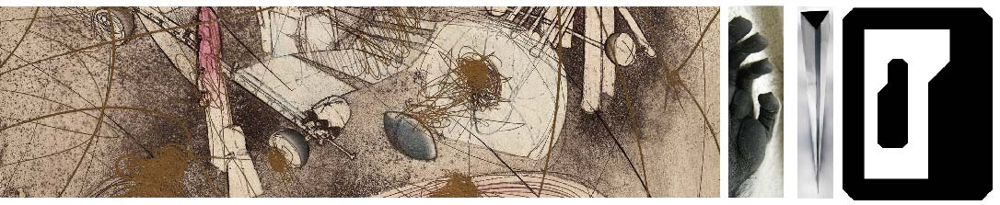

Maximilian Puelma Touzel is a Research Scientist in the Applied Machine Learning Research Team at Mila – Québec AI Institute and a member of McGill University's Complex Data Lab. Puelma Touzel holds a PhD in Physics from the University of Göttingen (IMPRS for Physics of Biological and Complex Systems, Max Planck Institute), and an MSc in Physics and a BSc in Physics and Mathematics from the University of Toronto. Following postdoctoral research at the École Normale Supérieure in Paris and at Mila/Université de Montréal, Puelma Touzel's work turned from theoretical neuroscience and statistical inference to computational social science and AI safety. Current research combines theory, multi-agent modelling, and LLM-based social simulation to study how individual capabilities and biases shape collective outcomes in human–AI societies. Puelma Touzel founded the STAMINA working group and co-organizes the Workshop on Social Simulation with LLMs at COLM.
My background is in math and physics, leaning theoretical but always grounded in experiments and applications. Early exposure to quantum information science with A. Steinberg, combined with an interest in physicists' successful forays into biology, pointed me toward neuroscience. For my PhD with F. Wolf at the Max Planck Institute, I studied neural circuit dynamics from a physics and dynamical-systems perspective, situating me in theoretical neuroscience and biophysics.
My first postdoc, with A. Walczak and T. Mora in Paris, pushed further into applications: building statistical inference tools to detect change in large datasets, using immune repertoires as the test case — though the toolset mattered more than the specific domain.
For my second postdoc (IVADO, with Y. Bengio and G. Lajoie at UdeM), I turned to learning dynamics and reinforcement learning, modelling goal-driven, strategic agent behaviour. Work with P. Cisek on the "tokens task" showed how animals deviate from reward-optimal behaviour once you account for their social context — reinforcing how central social factors are to decision-making. I also joined Irina Rish's Autonomous AI research cluster, studying why RL algorithms struggle in non-stationary, multi-agent continual learning settings.
Around then, growing concern about climate change pulled me from neuroscience toward the social sciences. Social dilemmas became my focus, with text as the natural data source — topic modelling being a close relative of the generative models I'd used for immune repertoires. This drew me into computational social science, and I joined McGill's Complex Data Lab to combine this with multi-agent modelling.
Today, social dilemmas are increasingly mediated by AI, which is why I see AI safety as the central social dilemma question. My contribution is a fairly unusual combination: theory and empirics on network dynamical systems, applied to the stability of collective states in learning agents.
Download CV.